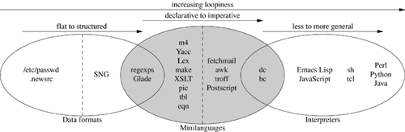

| [ Team LiB ] |
|
8.1 Understanding the Taxonomy of LanguagesAll the languages in Figure 8.1 are described in case studies, either in this chapter or elsewhere in this book. For the general-purpose interpreters near the right-hand side, see Chapter 14. Figure 8.1. Taxonomy of languages. In Chapter 5 we looked at Unix conventions for data files. There's a spectrum of complexity in these. At the low end are files that make simple associations between names and properties; the /etc/passwd and .newsrc formats are good examples. Further up the scale we start to get formats that marshal or serialize data structures; the PNG and SNG formats are (equivalent) good examples of this. A structured data-file format starts to border on being a minilanguage when it expresses not just structure but actions performed on some interpretive context (that is, memory that is outside the data file itself). XML markups tend to straddle this border; the example we'll look at here is Glade, a code generator for building GUI interfaces. Formats that are both designed to be read and written by humans (rather than just programs) and are used to generate code, are firmly in the realm of minilanguages. yacc and lex are the classic examples. We'll discuss glade, yacc and lex in Chapter 9. The Unix macro processor, m4, is another very simple declarative minilanguage (that is, one in which the program is expressed as a set of desired relationships or constraints rather than explicit actions). It has often been used as a preprocessing stage for other minilanguages. Unix makefiles, which are designed to automate build processes, express dependency relationships between source and derived files[2] and the commands required to make each derived file from its sources. When you run make, it uses those declarations to walk the implied tree of dependencies, doing the least work necessary to bring your build up to date. Like yacc and lex specifications, makefiles are a declarative minilanguage; they set up constraints that imply actions performed on an interpretive context (in this case, the portion of the file system where the source and generated files live). We'll return to makefiles in Chapter 15.
XSLT, the language used to describe transformations of XML, is at the high end of complexity for declarative minilanguages. It's complex enough that it's not normally thought of as a minilanguage at all, but it shares some important characteristic of such languages which we'll examine when we look at it in more detail below. The spectrum of minilanguages ranges from declarative (with implicit actions) to imperative (with explicit actions). The run-control syntax of fetchmail(1) can be viewed as either a very weak imperative language or a declarative language with implied control flow. The troff and PostScript typesetting languages are imperative languages with a lot of special-purpose domain expertise baked into them. Some task-specific imperative minilanguages start to border on being general-purpose interpreters. They reach this level when they are explicitly Turing-complete—that is, they can do both conditionals and loops (or recursion)[3] with features that are designed to be used as control structures. Some languages, by contrast, are only accidentally Turing-complete—they have features that can be used to implement control structures as a sort of side effect of what they are actually designed to do.
The bc(1) and dc(1) interpreters we looked at in Chapter 7 are good examples of specialized imperative minilanguages that are explicitly Turing-complete. We are over the border into general-purpose interpreters when we reach languages like Emacs Lisp and JavaScript that are designed to be full programming languages run in specialized contexts. We'll have more to say about these when we discuss embedded scripting languages later on. The spectrum in interpreters is one of increasing generality; the flip side of this is that a more general-purpose interpreter embodies fewer assumptions about the context in which it runs. With increasing generality there usually comes a richer ontology of data types. Shell and Tcl have relatively simple ontologies; Perl, Python, and Java more complex ones. We'll return to these general-purpose languages in Chapter 14. |
| [ Team LiB ] |
|